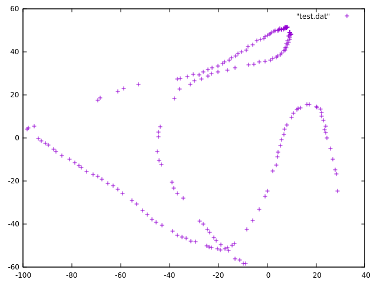

小さい機体でもSLAMこそが未来だと思うもののさすがに私では手がでないので貧者的局所測位系と名付けて天井に貼り付けたOpenVM cam+魚眼レンズとフレームからの情報を合わせてフレームにのせたマーカーの水平位置を推計するというのを作っています.

魚眼レンズで得られるイメージセンサー上のマーカーの位置からcamからの方向を計算してマーカーの高さの情報をヒントにマーカーのcamを基準にした水平位置をだしてます. このセンサ上のマーカーの位置から3Dの方向を計算するところはいわゆるステレオグラフィックプロジェクション(立体射影)になっていて、三角関数や線形代数を使って計算できます.
前置きが長くなりましたがフレームの水平位置を求めるところまでをgeometric algebraを使ったらどうなるか試してみました.
auto pointO = Construct::point(0,0,0);
auto pointP = Construct::point(0,0,-h);
auto v = - Vec(x,y,-1) * Vec(0,0,1) / Vec(x,y,-1);
auto line = pointO ^ v ^ Inf(1);
auto dlp = (pointP <= Drv(0,0,1));
auto pos = (dlp <= line);
の６行です. 使ったgeometric algebraのc++ライブラリは Versor (libvsr) というものです.
絵を書くとこうなってます. この絵はGAviewerで書きました.

(x,y)がスケールされたイメージセンサー上の位置で最初の一行目でそれを立体射影し得られる単位球面上の点へのベクトルvをもとめています。 みかけはちょっとアレですがこれも絵を書いて説明できます
あとは原点とその点を結ぶlineを作ってそれと高さの-hの水平面dlpとの交点(meet)を計算してposとしています。 <= はlibvsrでコントラクション(内積の拡張)に割り当てられた演算子です
記号になれてさえしまえば単に図を表すように書くだけなので案外簡単にいろいろなことができる印象です
プログラムを動かして得られたデータをプロットしたものが

です. データが飛んでいるのはうまくフレームと認識できなかったところでマーカーの位置やプログラム
等まだまだ手を加える必要があります.
この水平位置の推計を元にvisual odmetryのデータを作ってMAVLinkでAPMに投げてやろうと思っています.